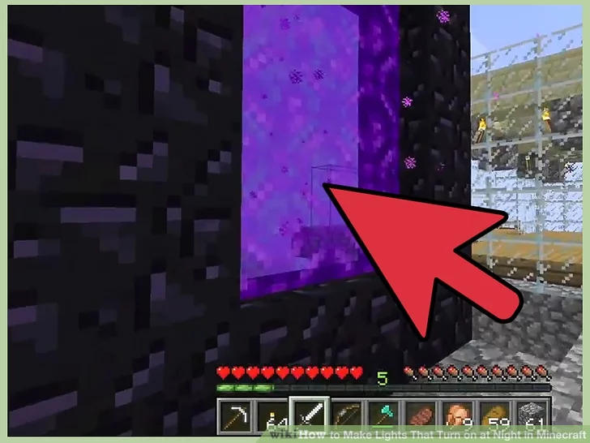
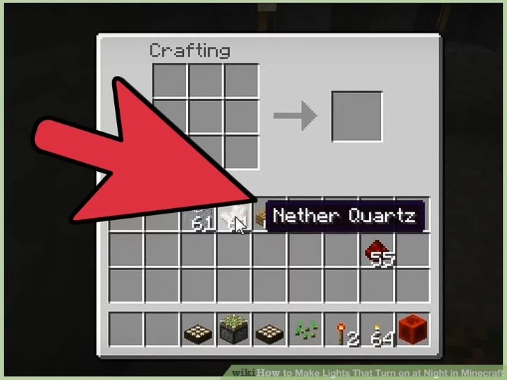
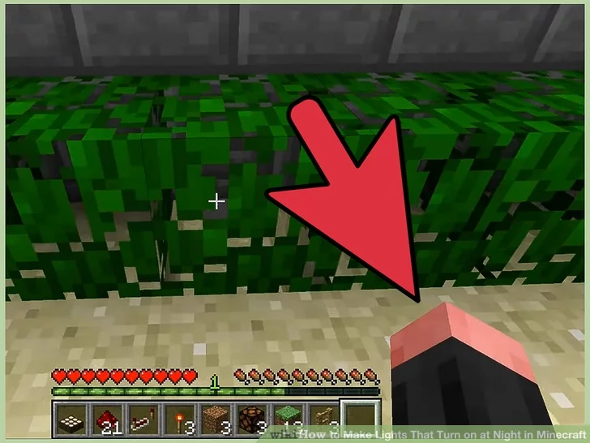

Lighting System
How to Make Lights That Turn on at Night in Minecraft
Daylight sensors have been around for a while, but the 1.8 Minecraft update made it easy to transform them into nightlights. This feature is also available on console editions of Minecraft, but not on Minecraft Pocket Edition or the Windows 10 beta edition.
Method 1: Using a Daylight Sensor
1: Mine nether quartz.
The daylight sensor is the easiest way to make a "night light," but you'll need a Nether portal to find the ingredients. Nether quartz ore isn't hard to find once you're in the Nether, but be prepared for difficult combats. Each sensor requires three nether quartz. The video below explains the best place to get nether quartz
2: Craft the daylight sensor.
Create a daylight sensor with the following ingredients:
Three glass in the top row
Three nether quartz in the middle row
Three wood slabs (not planks) on the bottom row.
3: Deposit the sensor.
Place the sensor anywhere you like. It is a half-height block, with a beige upper surface. By default, this sensor will provide power when sunlight hits it. The brighter the sunlight, the stronger the signal.
Next »